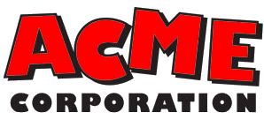

Mecanísmos ACME

La Corporación Acme (Acme Corporation en inglés) es una empresa ficticia que existe en el universo de los Looney Tunes. Apareció la mayor cantidad de veces en las caricaturas de El Coyote y el Correcaminos, que hicieron famosa a ACME por sus productos peligrosos y deficientes, los cuales fallaban catastróficamente de las peores maneras.